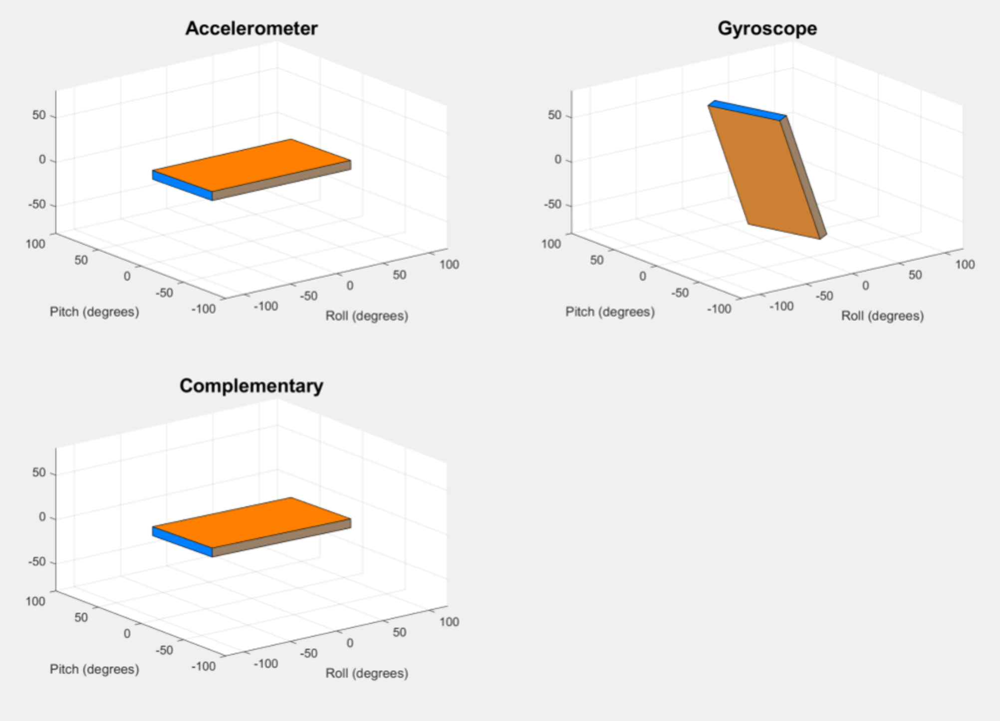
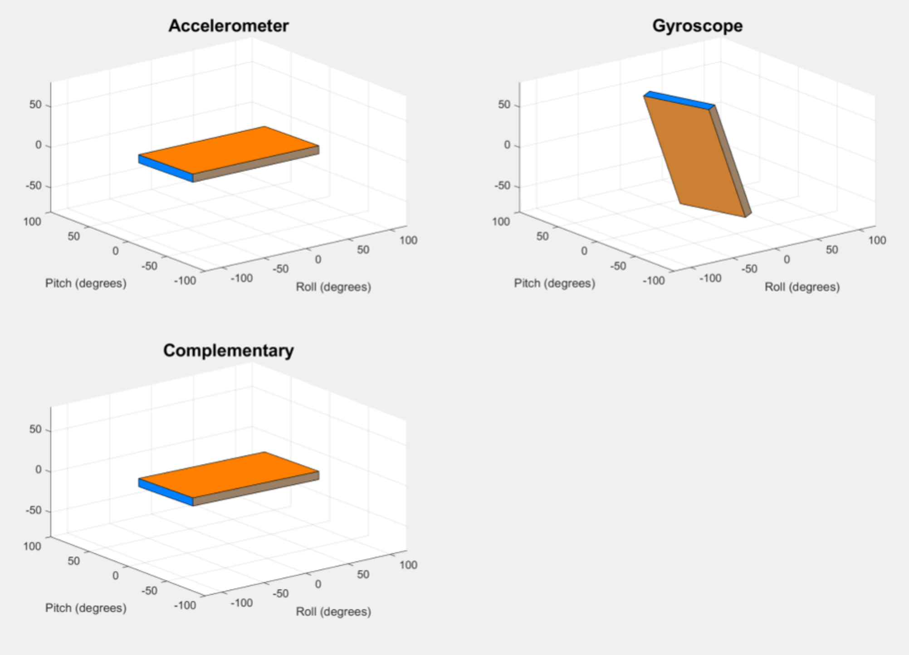
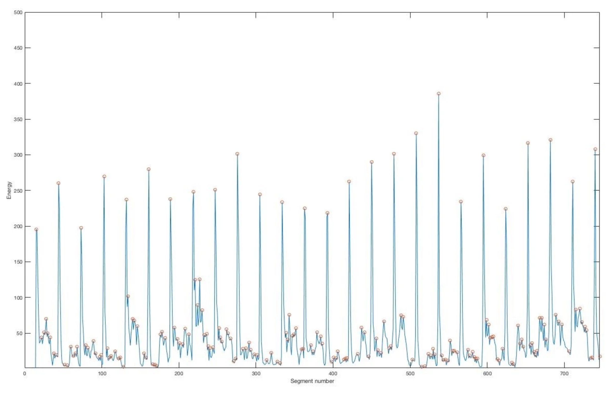
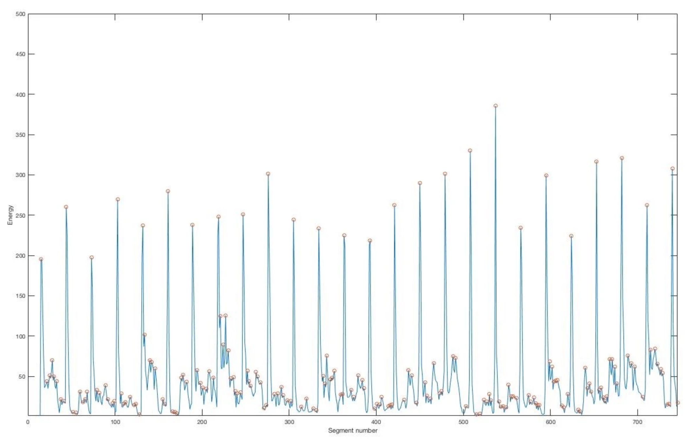

 

Project: MozArt Machine – Marker Sketch to Music Translation
Developed a Segway robot capable of balancing and ‘dancing’ to music, utilizing signal processing and electrical systems. Implemented on a PyBoard running Python scripts, the system included inputs such as a gyroscope and microphone, and outputs like DC motors and a small OLED screen. This project emphasized the integration of PID control and beat detection to achieve dynamic movement.
Balancing was controlled through a Proportional-Integral-Derivative (PID) algorithm, which adjusted motor speeds to counteract tipping based on proportional, integral, and derivative error calculations. To enhance stability, gyroscope and accelerometer data were processed through a complementary filter, reducing individual sensor inaccuracies. Musical beat detection was achieved by analyzing energy levels in real time, using an Interrupt Service Routine (ISR) to modify the Segway’s target pitch angle whenever significant energy peaks were identified. By shifting the target angle, the Segway moved rhythmically in response to the detected beats, effectively ‘dancing.’
The algorithm further analyzed parameters such as energy intensity and frequency content to create a variety of synchronized movements. This innovative approach combined technical precision with creative functionality, showcasing expertise in robotics, control systems, and signal processing.
Topics: PID Control, Signal Processing, Embedded Systems, Robotics, Python Programming